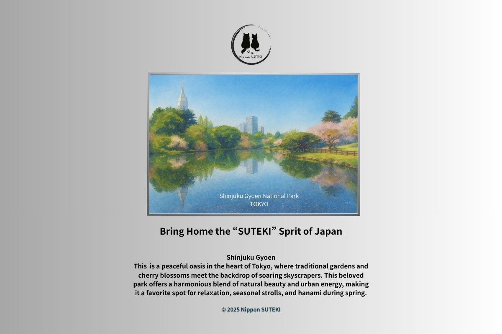
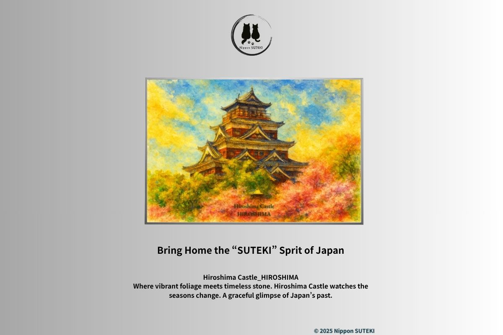
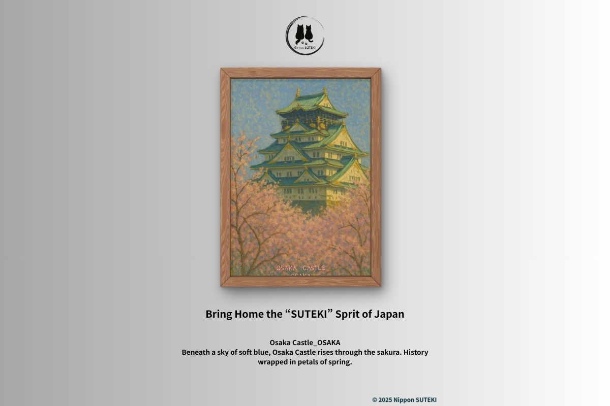
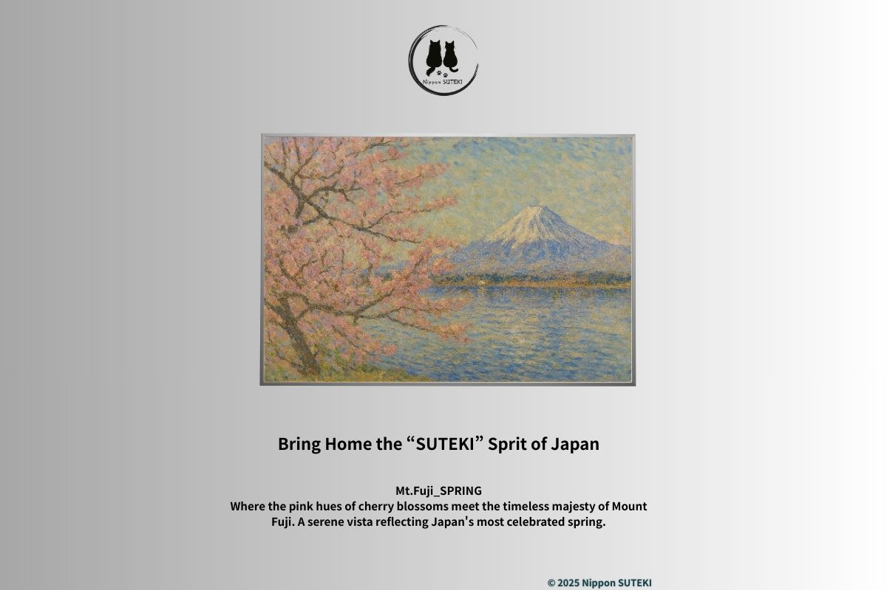

Stories Behind the Art
Moments, meanings, and the quiet distance between what we see and what remains.

A Map with Three Ages
Three visions of nature, coexisting in quiet tension — what Shinjuku Gyoen is really showing — by Sari

What the Poster Doesn't Show
Before the beauty, there was ruin — how Shinjuku Gyoen became a place for everyone — by Kiri

The Castle That Refuses to Vanish
Destruction, silence, and the decision to rebuild. What Hiroshima Castle still carries beneath its calm surface — by Kiri

The Castle Called Fish
A name that existed before the fish. The quiet gap between what we see and what it means — by Sari

The Blood Beneath the Blossoms
Power, deception, and the meaning carved into stone — what Osaka Castle was built to remember — by Kiri

Stone and Petals
Blossoms that vanish. Stone that remains. Two timelines crossing in silence — by Sari

Why Japan Loves Fleeting Moments
A culture shaped by things that disappear — snow, sakura, and a moment that cannot stay — by Kiri

Japan’s Hidden Fifth Season
Where winter and spring overlap — a season that exists for only a moment — by Sari